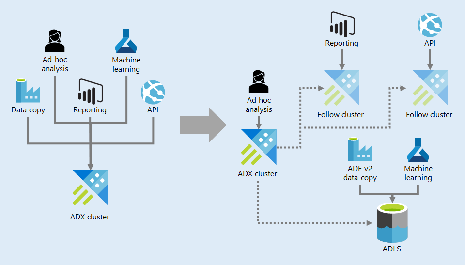

Azure Data Explorer
This is a cross-post of the article I wrote for Data Science @ Microsoft, Azure Data Explorer at the Azure business scale.
As I mentioned in my previous post, “Self-Serve Analytics”, our team uses Azure Data Explorer (ADX) as our main data store. In this post, I will delve deeply into how we use ADX.
Use Case
The ADX documentation describes it as “a fast, fully managed data analytics service for real-time analysis on large volumes of data streaming from applications, websites, IoT devices, and more.” ADX streams terabytes of data and enables real-time analytics to be performed on it. In many cases, this ADX-enabled data is used in the context of ingesting and analyzing telemetry from various services or endpoints. Our use case for ADX is different: We use it as the main data store for our big data platform.
We rely on the ingestion capabilities of ADX to pull in terabytes of data pertaining to the Azure business from various sources. Our data science team then leverages the fast query capabilities offered by ADX to explore the data in real time and perform modeling work, which leads to a better understanding of our customers.
Some of the data points our team uses are already stored in ADX when we access them, in different clusters managed by other teams. We use the cross-cluster query capabilities provided by ADX to join these external data sets with local data.
Our engineering team also relies on the same fast query capabilities of ADX to power some of our web APIs.
Ingestion
We have a well-defined process to bring new data sets into our cluster. First, we take a one-time snapshot of a potential data set and store it in a separate cluster (our acquisition cluster), where access is even further restricted to the small set of individuals tasked with exploring this new data set. This initial exploration gives us a good sense of which parts of the data are useful for ingesting on a regular cadence, and what our data model should look like. We can then create a data contract with the upstream team to define SLAs and start automating the data pull.
All data movement is set up in Azure Data Factory and actively monitored.
DevOps and Analytics
As I mentioned in my previous post on our data environment, we use the Azure DevOps ADX Task to deploy objects from git. Tables are set up using a .create-or-merge table script while functions are set up using a .create-or-alter function script. Both commands are idempotent so we can replay them even if objects already exist.
As a team, we’ve standardized on ADX functions for analytics, so all the reports, KPIs, and metrics our team produces end up implemented as functions stored in git and deployed using Azure DevOps. The ability to organize objects in a folder structure helps us group them by focus area.
Customer Model
Not only do we ingest large amounts of data into our main ADX cluster, we are also processing and enhancing it to build what we call the customer model.
The customer model consists of three components:
- A keyring, which helps us tie together various identifiers used across the business, enabling us to understand, for example, which company a subscription belongs to.
- A set of customer properties, which you can think of as key-value pairs attached to an identity in our system.
- An activity model, which represents a timeline view of various relevant events for an identity in our system. For example, for a subscription identifier we have events such as “created” and “closed”.
We use a set of Logic Apps and CosmosDB to process and enhance raw data into our customer model, which consists of a keyring, customer properties, and an activity model.
The customer model is continuously updated as we ingest new data points and represents an enhanced view of the raw data. It is implemented as a small set of (very large) tables and multiple functions to improve navigation. The expressive ADX function syntax allows us to create functions that can be combined to produce very complex queries of the data model.
The workflow of building the model is orchestrated by Logic Apps, which run ADX functions to join and enhance the raw data. The keyring is an exception: We build it using CosmosDB, namely the Gremlin API, which can perform graph traversal. We load all identifiers as vertices and known connections as edges, and then we group each connected component of the graph into a key group. This gives us the association across all identities within our system. The output is written back to ADX.
We consume the customer model through ADX functions. As an example, the GetRelatedKeysByType() function takes as arguments an identifier value and an identifier type name and returns all identifiers related to it from the keyring. We can pass the result of this call to the GetActivities() function, which also takes as arguments a startDate datetime and an endDate datetime, to get all activities for the given ID group within that time range.
Different activities are described by different properties. For example, a subscription created activity contains, among other things, an Offer ID, an Offer Type, and a flag indicating whether the subscription was created as a trial. As another example, a daily usage activity contains the name of the sold service and consumption units. We use the ADX pack() function to store these properties as dynamic objects in the underlying data model, allowing us to maintain a standard schema.
Compliance
Because we store some high business impact data sets, such billing data for Azure services, we must govern who can see different parts of the data. We set role-base access control (RBAC) at the database level, so we can place sensitive data sets in dedicated databases.
We can also mark tables as restricted, which limits users to those with the UnrestrictedViewer role. In ADX, a Viewer role can view any table in a database except those marked as restricted. The UnrestrictedViewer role can view any table in a database regardless of whether it is restricted or not. The ADX team is also working on enabling table-level access control, which will allow even more granular RBAC assignments.
We are also leveraging ADX retention policies to ensure data doesn’t stick around forever. In some cases, this is a requirement of the Microsoft data handling standards that are mandatory across the company. In other cases, we ensure prototypes and proofs-of-concept are cleaned up so they don’t make their way into our production boundary. I detailed this in my previous post, where I discussed how we move analytics from the prototype Scratch database (with its 30-day retention policy) to WorkArea and then to Production.
Scaling Out
As more and more workloads are served by our main ADX cluster, we need to start thinking about performance and scale. We are addressing this in two main ways: With our approach to data distribution and by looking into follow clusters.
Scaling out from a single ADX cluster serving all workloads to multiple follow clusters supporting different workloads and ADLS for low frequency, high volume data movement.
We used to simply grant access to our data in ADX to teams interested in consuming it. The problem with this approach is that external teams might end up running expensive queries against our cluster and disrupt other operations. This happened frequently in the common scenario of bulk data movement of the large data sets our team produces. Because of this, we are no longer granting access to any service principles to ADX. We allow individuals to come in and explore our data sets but when they want to start copying it on a regular cadence, we use a different storage solution: Azure Data Lake Storage (ADLS).
Because our data sets are updated on a daily, weekly, or monthly cadence, we only need to copy them to ADLS once after an update, and then other teams can pick them up from there without having an impact on the performance of our ADX cluster. ADLS provides large scale storage at very low cost, so it is ideal for this scenario.
The other scaling method we are considering is setting up follow clusters. A follower cluster can replicate data from the followed cluster, which would enable us to offload some workloads to separate compute. By default, everything is followed, which is redundant for the amount of data we have, but a follower can be configured to mirror only a subset of the followed data. We can do this by starting with a caching policy of 0 (which prevents any data replication), and then selectively overwrite it for the databases and tables we want to replicate.
Summary
In this post, I’ve discussed our team’s use of Azure Data Explorer:
- Many of our scenarios involve data exploration. That activity, combined with the large data ingestion and cross-cluster capabilities of ADX, makes ADX a great data store solution.
- We bring data into our cluster via a clearly defined process so that data loads can be consistently performed and monitored.
- We use DevOps to deploy objects to production from git.
- We enhance our raw data with a Customer Model, a curated data set consisting of three major pieces: A keyring, a set of customer properties, and an activity model. We use ADX functions as an interface to this data set.
- For compliance, we place data in different databases depending on its classification, and we have granular access control for each database.
- Scaling out, we offload large copy jobs to Azure Data Lake Storage, and we can create follow clusters to partition the compute load.